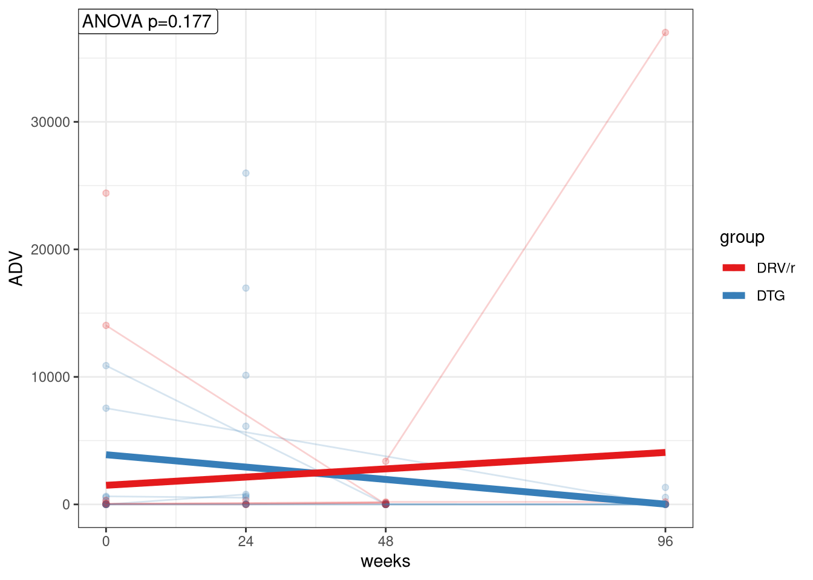

Adenovirus Analisis
Marc Noguera, Carlos Blázquez
5/3/2022
Last updated: 2022-05-26
Checks: 5 2
Knit directory: advanz4/
This reproducible R Markdown analysis was created with workflowr (version 1.7.0). The Checks tab describes the reproducibility checks that were applied when the results were created. The Past versions tab lists the development history.
The R Markdown file has unstaged changes. To know which version of the R Markdown file created these results, you’ll want to first commit it to the Git repo. If you’re still working on the analysis, you can ignore this warning. When you’re finished, you can run wflow_publish to commit the R Markdown file and build the HTML.
Great job! The global environment was empty. Objects defined in the global environment can affect the analysis in your R Markdown file in unknown ways. For reproduciblity it’s best to always run the code in an empty environment.
The command set.seed(20211203) was run prior to running the code in the R Markdown file. Setting a seed ensures that any results that rely on randomness, e.g. subsampling or permutations, are reproducible.
Great job! Recording the operating system, R version, and package versions is critical for reproducibility.
- construct_nmds
- nmds_ADV
- read_data
To ensure reproducibility of the results, delete the cache directory 505_Adenovirus_Analysis_cache and re-run the analysis. To have workflowr automatically delete the cache directory prior to building the file, set delete_cache = TRUE when running wflow_build() or wflow_publish().
Great job! Using relative paths to the files within your workflowr project makes it easier to run your code on other machines.
Great! You are using Git for version control. Tracking code development and connecting the code version to the results is critical for reproducibility.
The results in this page were generated with repository version ac624c3. See the Past versions tab to see a history of the changes made to the R Markdown and HTML files.
Note that you need to be careful to ensure that all relevant files for the analysis have been committed to Git prior to generating the results (you can use wflow_publish or wflow_git_commit). workflowr only checks the R Markdown file, but you know if there are other scripts or data files that it depends on. Below is the status of the Git repository when the results were generated:
Ignored files:
Ignored: .RData
Ignored: .Rhistory
Ignored: .Rproj.user/
Ignored: analysis/.Rhistory
Ignored: analysis/505_Adenovirus_Analysis_cache/
Ignored: analysis/output/mre_data/SpeciesQuantification/Metaphlan3/NMDS/
Ignored: data/mre.rds
Unstaged changes:
Modified: analysis/505_Adenovirus_Analysis.Rmd
Note that any generated files, e.g. HTML, png, CSS, etc., are not included in this status report because it is ok for generated content to have uncommitted changes.
These are the previous versions of the repository in which changes were made to the R Markdown (analysis/505_Adenovirus_Analysis.Rmd) and HTML (docs/505_Adenovirus_Analysis.html) files. If you’ve configured a remote Git repository (see ?wflow_git_remote), click on the hyperlinks in the table below to view the files as they were in that past version.
| File | Version | Author | Date | Message |
|---|---|---|---|---|
| Rmd | ac624c3 | cblazquez | 2022-05-25 | Rendered last version of HTML |
| html | ac624c3 | cblazquez | 2022-05-25 | Rendered last version of HTML |
| Rmd | 047524b | cblazquez | 2022-05-25 | Added ADV corrs with igc and part of NMDS (later still incomplete) |
| html | 047524b | cblazquez | 2022-05-25 | Added ADV corrs with igc and part of NMDS (later still incomplete) |
| Rmd | 72fc95a | cblazquez | 2022-05-24 | Added ADV qualitative analysis |
| html | 72fc95a | cblazquez | 2022-05-24 | Added ADV qualitative analysis |
| Rmd | 28f4f36 | cblazquez | 2022-05-23 | started with ADV+Entero analysis |
| html | 28f4f36 | cblazquez | 2022-05-23 | started with ADV+Entero analysis |
mymre <- mymre <- aws.s3::s3readRDS(bucket = "s3://mistral-wp6-advanz4", object = "metagenome/WMGS/MREObject.rds")
# metadata <-get_meta(mymre)
cat_df <-
here::here("Metadata", "CategoricalVariables.txt") %>%
read.delim(., header = T)
cat_vector <- cat_df %>%
pull(CategoricalVariable)
long_var <- here::here("Metadata", "LongitudinalVariables.txt") %>%
read.delim(., header = T) %>%
pull(LongitudinalVariable)
link_var <- here::here("Metadata", "LongitudinalVariables.txt") %>%
read.delim(., header = T) %>%
pull(LinkVariable)
num_var <- here::here("Metadata", "NumericalVariables.txt") %>%
read.delim(., header = T) %>%
pull(NumericalVariable)
metadata <-
here::here("Metadata", "2022_04_28_clean_metadata_LIMS.csv") %>%
read.csv() %>%
mutate(ADV_p = case_when(
is.na(ADV) ~ "no",
!is.na(ADV) ~ "yes"), .after = "ADV") %>%
mutate(rownames = SampleID) %>%
column_to_rownames("rownames")suggested package selbal ✔suggested package DataExplorer ✔suggested package lme4 ✔suggested package merTools ✔Import data and variable definition.
Only a few patients had any detecatble ADV presence on their guts, which also had huge variations. Hence we expect a quantitative approach to hold little power. We’ll complement with a qualitative approach based on presence/absence of both ADV and EV.
First, classify each sample as ADV+/ADV-. (Do the same for Enterovirus).
Adenovirus per treatment
A quick view at the value distribution should inform of normality and ossible outliers
metadata %>%
dplyr::select(link_var = !!sym(link_var),
long_var = !!sym(long_var),
cat_var = "group",
ADV) %>%
ggplot2::ggplot(., aes(x=ADV, color=cat_var)) +
geom_density(stat="density") +
theme_minimal() +
labs(title = "Adenovirus", subtitle = "Abundance distribution (log10)", x="log10(ADV)",
color = "group") +
scale_color_brewer(palette = "Set1")
| Version | Author | Date |
|---|---|---|
| 047524b | cblazquez | 2022-05-25 |
It is clear there are outliers on the data which heavily skew the DTG group. This is due to one specific sample from the DTG group with an outstanding ammount of ADV.
| SampleID | record_id | time_point | ADV | |
|---|---|---|---|---|
| ADZ4_260 | ADZ4_260 | B007 | 0 | 7716041 |
This one will be taken out from quantitative analysis from now on.
maxADV <- metadata %>%
pull(ADV) %>%
max(., na.rm = T)
metadata_f <-
metadata %>%
dplyr::filter((ADV != maxADV) %>%
replace_na(T))
metadata_f %>%
dplyr::select(link_var = !!sym(link_var),
long_var = !!sym(long_var),
cat_var = "group",
ADV) %>%
ggplot2::ggplot(., aes(x=ADV, color=cat_var)) +
geom_density(stat="density") +
theme_minimal() +
labs(title = "Adenovirus", subtitle = "Abundance distribution (log10)", x="log10(ADV)",
color = "group") +
scale_color_brewer(palette = "Set1")
| Version | Author | Date |
|---|---|---|
| 047524b | cblazquez | 2022-05-25 |
Now the data is still heavily skewed but we can see a more reasonable distribution, with majority of 0s but those with actual abundance have more “evenly” distributed values.
Quantitative exploration
LMMlist <- metadata_f %>%
create_LMM(data = .,
num_var = "ADV",
cat_var = "group",
long_var = long_var,
link_var = link_var,
breakpoints = NULL)
LMMlist$stats slope pval CategoricalVariable
DRV/r 26.833 0.538 DRV/r
DTG -40.395 0.039 DTGunique(metadata_f$group) %>%
purrr::set_names() %>%
purrr::map_dfr(~{
metadata_f %>%
dplyr::select(link_var = !!sym(link_var),
long_var = !!sym(long_var),
cat_var = "group",
ADV) %>%
dplyr::filter(cat_var == .x) %>%
dplyr::pull(ADV) %>%
summary()
}) %>%
dplyr::mutate(lev=unique(metadata_f$group)) %>%
tibble::column_to_rownames("lev") %>%
kableExtra::kable(format="markdown")| Min. | 1st Qu. | Median | Mean | 3rd Qu. | Max. | NA’s | |
|---|---|---|---|---|---|---|---|
| DTG | 0.0107 | 0.0807 | 2.4553 | 2026.839 | 554.6086 | 25980.53 | 99 |
| DRV/r | 0.0028 | 0.0408 | 1.6708 | 2435.987 | 146.4422 | 37014.20 | 89 |
We see here that ADV follows a non-normal heavily skewed toward the left. We’ll check how do they behave considering treatment time.
myLMMs <- get_lmm_effects(data =metadata_f,
cat_vector = c("group"),
num_vector = c("ADV"),
long_var = long_var,
link_var = "record_id") [1] "group"
[1] "ADV"myLMMs$group$ADV$plot
It appears both groups have opposite trends, as the DRV/r group tends to increase while the DTG decreases. However, it is not only backed ANOVA test, but the increase in the DRV/r group should be taken with caution, as most patients actually decrease excep for one who has a massive increase between weeks 48 and 96. There is also little coninuity in the data, as mmost patients only present some levels of ADV at only one time point, those gaps negatively affecting the test’s robustness.
Adenovirus qualitative analysis
We will test for presence/absence and try to test for differences among groups. We’ll test for proportions of patients positive per ADV per group and time. We’ll first visualize the evolution of the data. Afterwards, an exact Fisher’s test will be used between baseline and weeks 48/96 for each group.
cat_var = "group"
num_var = "ADV"
link_var = "record_id"
#Exploratory histogram
metadata %>%
dplyr::select(link_var = link_var,
long_var = long_var,
cat_var = cat_var,
num_var = ADV_p) %>%
dplyr::group_by(cat_var, long_var) %>%
dplyr::count(num_var) %>%
dplyr::mutate(long_var = as.factor(long_var)) %>%
tidyr::pivot_wider(id_cols = c("cat_var","long_var"), names_from = "num_var", values_from = "n") %>%
dplyr::mutate(incidence = yes*100 / (no + yes)) %>%
ggplot(., aes(x=long_var, y = incidence, fill = cat_var)) +
# facet_wrap(~cat_var) +
geom_histogram(stat="identity", position = "dodge") +
theme_minimal() +
scale_fill_brewer(palette = "Set1") +
labs(x = "week",y="ADV incidence (%)", fill = "group") 
## Fisher's test
unique(metadata[,cat_var]) %>%
purrr::set_names() %>%
purrr::map(function(cv) {
a <-
metadata %>%
select(cat_var = cat_var,
long_var = long_var,
ADV_p) %>%
dplyr::filter(cat_var == cv) %>%
dplyr::group_by(long_var) %>%
dplyr::count(ADV_p) %>%
dplyr::ungroup() %>%
tidyr::pivot_wider(
id_cols = c("long_var"),
names_from = "ADV_p",
values_from = "n"
) %>%
tibble::column_to_rownames("long_var") %>%
as.matrix() %>%
fisher.test()
})$DTG
Fisher's Exact Test for Count Data
data: .
p-value = 0.7189
alternative hypothesis: two.sided
$`DRV/r`
Fisher's Exact Test for Count Data
data: .
p-value = 0.2936
alternative hypothesis: two.sidedAlthough there is a difference in ADV incidence between baselina and week 96 for both groups, no decreasing trend over tie could be observe, as ADV seems to spike in the following weeks of starting treatment. Interestingly, this spike happens at week 24 for RTV/r and week 48 for DTG.
No differences in presence/absence ratios per time points were found in either group, according to Fisher’s test.
Adenovirus detection vs Microbiome composition
threshold <-
metar::get_diversity(mymre, type = "igc", res_slot = "metaphlan3") %>%
purrr::pluck("dataTable")%>%
dplyr::select(SampleID, NumberMappedReads) %>%
unique() %>%
summarise(Q = quantile(NumberMappedReads, 0.02)) %>%
as.numeric()
igc <-
metar::get_diversity(mymre, type = "igc", res_slot = "metaphlan3") %>%
purrr::pluck("dataTable") %>%
filter(NumberMappedReads >= threshold) %>%
filter(ReadCountReal >= threshold) %>%
group_by(SampleID) %>%
summarise(across(everything(), min)) %>%
ungroup() %>%
select(SampleID, GeneNumber)
metadata_f %>%
dplyr::select(SampleID,
link_var = "record_id",
# long_var = long_var,
cat_var = cat_var,
ADV) %>%
dplyr::right_join(igc, by="SampleID") %>%
# mutate(ADV = log10(ADV)) %>%
get_lmm_effects(., cat_vector = cat_var, num_vector = "ADV", long_var = "GeneNumber",link_var = "link_var") %>%
purrr::pluck("group","ADV","plot") +
scale_x_continuous() +
# scale_y_log10() +
labs(x = "gene count")[1] "group"
[1] "ADV"
| Version | Author | Date |
|---|---|---|
| 047524b | cblazquez | 2022-05-25 |
Nothing conclussive can be extracted by correlating gene richness to ADV presence, except that both groups evolution are close to a perfect match. This is mainly due to how much ADV levels vary beween patients and how discontinuous the data is. Most patients persent ADV in only one or two timepoints, which affects the robustness of any longitudinal approach. An qualitative approach may be more useful.
c(0,48,96) %>%
purrr::set_names() %>%
purrr::map(function(tp){
group_difs <- metadata %>%
dplyr::filter(time_point == tp) %>%
dplyr::select(SampleID,
link_var = "record_id",
# long_var = long_var,
cat_var = cat_var,
ADV_p) %>%
dplyr::left_join(igc, by="SampleID") %>%
dplyr::filter(!is.na(ADV_p)) %>%
dplyr::group_by(cat_var) %>%
rstatix::wilcox_test(., GeneNumber ~ ADV_p) %>%
rstatix::add_xy_position(x = "cat_var") %>%
# mutate(xmin = c(0.8,1.2),
# xmax=c(1.8,2.2)) %>%
rstatix::add_significance() %>%
dplyr::mutate(ADV_p = "yes") # This dows nothing, but plotting fails without it as it keeps looking for "ADV-p" because it is stated in aes()
metadata %>%
dplyr::filter(time_point == tp) %>%
dplyr::select(SampleID,
link_var = "record_id",
# long_var = long_var,
cat_var = cat_var,
ADV_p) %>%
dplyr::left_join(igc, by="SampleID") %>%
dplyr::filter(!is.na(ADV_p)) %>%
ggplot(aes(x=cat_var, y = GeneNumber, fill = ADV_p)) +
geom_boxplot(color="black", outlier.shape = NA) +
geom_point(size = 0.7, position = position_jitterdodge(jitter.width = .2), shape = 3) +
theme_bw() +
labs(x = "group", y = "gene count", fill = "ADV", title = paste("ADV/group, week ",tp,sep="")) +
scale_fill_brewer(palette = "Set1") +
ggpubr::stat_pvalue_manual(data = group_difs,label = "p = ,{p}", hide.ns = F, size = 3)
}) %>%
ggpubr::ggarrange(plotlist = ., common.legend = T)
| Version | Author | Date |
|---|---|---|
| 047524b | cblazquez | 2022-05-25 |
Here we see a similar signal. Gene richness increased more in the DTG than in the RTV/r group, but no differences were found between those with and without presence of Adenovirus. Low amount of patients with ADV and great variation may be taking a toll on Wilcoxon tests sensitivity.
NMDS
Last, we will look for links between overall microbiome structure and Adenovirus incidence.
# Add the categorical var ADV_p to the mre
mymre@metadata@categorical_vals <- rbind(mymre@metadata@categorical_vals, c("ADV_p", "Set1") )
mymre <- metaphlan_nmds(mymre, tax_level = "Species", top_n = 50, save_files = F)
ADV_nmds <- get_taxa(mymre, type="metaphlan", result_slot = "nmds") %>%
purrr::pluck("Species", "top_50","categorical","ADV_p")No significant clstering can be observed.
NMDS_long_list <- c("ADV_p") %>%
purrr::set_names() %>%
purrr::map(function(cv) {
c("NMDS1", "NMDS2") %>%
purrr::set_names() %>%
purrr::map(function(comp) {
ADV_nmds$data %>%
dplyr::select(SampleID, NMDS = comp) %>%
dplyr::inner_join(metadata_f[, c("SampleID", "ADV_p","time_point" ,"record_id", cv)], by =
"SampleID") %>%
get_lmm_effects(data = ., cat_vector = cv, num_vector = "NMDS", long_var = "time_point", link_var = "record_id") %>% purrr::pluck(cv,"NMDS","plot") +
scale_x_continuous(n.breaks = 10) +
# ggplot(., aes(x = time_point, y = NMDS, fill = !!sym(cv),color = !!sym(cv))) +
# geom_point() +
# geom_smooth(, method = "lm")+
labs(x = "week", y = comp)
}) %>%
ggpubr::ggarrange(plotlist = ., common.legend = T)
})
NMDS_long_list$ADV_pWe observe no temporal tendency towards any direction in the NMDS by ADV presence, while group do
Use:
- NMDS coordinates (NMDS1 and NMDS2) vs ADV+/ADV-
- PERMANOVA to check significance.
- ADV+/ADV- vs gene richness
sessionInfo()R version 4.0.5 (2021-03-31)
Platform: x86_64-redhat-linux-gnu (64-bit)
Running under: Fedora 34 (Workstation Edition)
Matrix products: default
BLAS/LAPACK: /usr/lib64/libflexiblas.so.3.1
locale:
[1] LC_CTYPE=en_US.UTF-8 LC_NUMERIC=C
[3] LC_TIME=en_US.UTF-8 LC_COLLATE=en_US.UTF-8
[5] LC_MONETARY=en_US.UTF-8 LC_MESSAGES=en_US.UTF-8
[7] LC_PAPER=en_US.UTF-8 LC_NAME=C
[9] LC_ADDRESS=C LC_TELEPHONE=C
[11] LC_MEASUREMENT=en_US.UTF-8 LC_IDENTIFICATION=C
attached base packages:
[1] stats graphics grDevices utils datasets methods base
other attached packages:
[1] nlme_3.1-157 metar_0.1.5 testthat_3.1.4 RColorBrewer_1.1-3
[5] forcats_0.5.1 stringr_1.4.0 dplyr_1.0.9 purrr_0.3.4
[9] readr_2.1.2 tidyr_1.2.0 tibble_3.1.7 ggplot2_3.3.6
[13] tidyverse_1.3.1
loaded via a namespace (and not attached):
[1] estimability_1.3 coda_0.19-4 bit64_4.0.5
[4] knitr_1.39 multcomp_1.4-19 wesanderson_0.3.6
[7] data.table_1.14.2 DataExplorer_0.8.2 generics_0.1.2
[10] BiocGenerics_0.36.1 callr_3.7.0 cowplot_1.1.1
[13] TH.data_1.1-1 usethis_2.1.5 future_1.25.0
[16] correlation_0.8.0 bit_4.0.4 tzdb_0.3.0
[19] webshot_0.5.3 xml2_1.3.2 lubridate_1.8.0
[22] httpuv_1.6.5 assertthat_0.2.1 WRS2_1.1-3
[25] xfun_0.31 hms_1.1.1 jquerylib_0.1.4
[28] evaluate_0.15 promises_1.2.0.1 fansi_1.0.3
[31] dbplyr_2.1.1 readxl_1.4.0 igraph_1.3.1
[34] DBI_1.1.2 htmlwidgets_1.5.4 reshape_0.8.9
[37] kSamples_1.2-9 stats4_4.0.5 Rmpfr_0.8-7
[40] paletteer_1.4.0 ellipsis_0.3.2 ggpubr_0.4.0
[43] backports_1.4.1 insight_0.17.0 permute_0.9-7
[46] vctrs_0.4.1 Biobase_2.50.0 remotes_2.4.2
[49] here_1.0.1 abind_1.4-5 cachem_1.0.6
[52] withr_2.5.0 ggforce_0.3.3 aws.signature_0.6.0
[55] vroom_1.5.7 emmeans_1.7.3 vegan_2.6-2
[58] prettyunits_1.1.1 svglite_2.1.0 cluster_2.1.3
[61] ape_5.6-2 crayon_1.5.1 SuppDists_1.1-9.7
[64] pkgconfig_2.0.3 labeling_0.4.2 tweenr_1.0.2
[67] statsExpressions_1.3.1 pkgload_1.2.4 blme_1.0-5
[70] devtools_2.4.3 rlang_1.0.2 globals_0.14.0
[73] lifecycle_1.0.1 sandwich_3.0-1 selbal_0.1.0
[76] phyloseq_1.34.0 modelr_0.1.8 cellranger_1.1.0
[79] rprojroot_2.0.3 polyclip_1.10-0 datawizard_0.4.0
[82] Matrix_1.4-1 mc2d_0.1-21 carData_3.0-5
[85] Rhdf5lib_1.12.1 boot_1.3-28 zoo_1.8-10
[88] reprex_2.0.1 base64enc_0.1-3 whisker_0.4
[91] processx_3.5.3 viridisLite_0.4.0 PMCMRplus_1.9.4
[94] parameters_0.17.0 rhdf5filters_1.2.1 Biostrings_2.58.0
[97] workflowr_1.7.0 multcompView_0.1-8 arm_1.12-2
[100] parallelly_1.31.1 rstatix_0.7.0 S4Vectors_0.28.1
[103] ggsignif_0.6.3.9000 aws.s3_0.3.21 scales_1.2.0
[106] memoise_2.0.1 magrittr_2.0.3 plyr_1.8.7
[109] zlibbioc_1.36.0 compiler_4.0.5 kableExtra_1.3.4
[112] lme4_1.1-29 snakecase_0.11.0 cli_3.3.0
[115] ade4_1.7-19 XVector_0.30.0 lmerTest_3.1-3
[118] listenv_0.8.0 patchwork_1.1.1 ps_1.7.0
[121] ggside_0.2.0 MASS_7.3-57 mgcv_1.8-40
[124] tidyselect_1.1.2 stringi_1.7.6 highr_0.9
[127] yaml_2.3.5 ggrepel_0.9.1 grid_4.0.5
[130] sass_0.4.1 tools_4.0.5 parallel_4.0.5
[133] rstudioapi_0.13 foreach_1.5.2 logging_0.10-108
[136] git2r_0.30.1 janitor_2.1.0 gridExtra_2.3
[139] farver_2.1.0 digest_0.6.29 shiny_1.7.1
[142] BWStest_0.2.2 networkD3_0.4 Rcpp_1.0.8.3
[145] car_3.0-13 broom_0.8.0 performance_0.9.0
[148] later_1.3.0 httr_1.4.2 effectsize_0.6.0.1
[151] colorspace_2.0-3 rvest_1.0.2 brio_1.1.3
[154] fs_1.5.2 IRanges_2.24.1 splines_4.0.5
[157] rematch2_2.1.2 multtest_2.46.0 sessioninfo_1.2.2
[160] systemfonts_1.0.4 gmp_0.6-5 xtable_1.8-4
[163] jsonlite_1.8.0 nloptr_2.0.2 zeallot_0.1.0
[166] R6_2.5.1 broom.mixed_0.2.9.4 pillar_1.7.0
[169] htmltools_0.5.2 mime_0.12 glue_1.6.2
[172] fastmap_1.1.0 minqa_1.2.4 codetools_0.2-18
[175] pkgbuild_1.3.1 mvtnorm_1.1-3 furrr_0.2.3
[178] utf8_1.2.2 lattice_0.20-45 bslib_0.3.1
[181] logger_0.2.2 numDeriv_2016.8-1.1 curl_4.3.2
[184] survival_3.3-1 rmarkdown_2.14 desc_1.4.1
[187] biomformat_1.18.0 merTools_0.5.2 munsell_0.5.0
[190] rhdf5_2.34.0 iterators_1.0.14 ggstatsplot_0.9.1
[193] haven_2.5.0 reshape2_1.4.4 gtable_0.3.0
[196] bayestestR_0.11.5.1